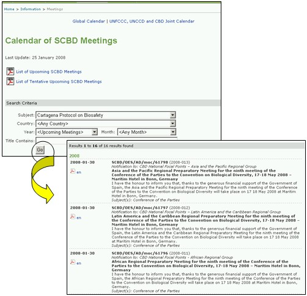

El enlace Reuniones y Documentos lleva al usuario a la página del Calendario de las Reuniones de la SCDB en la cual se suministran los enlaces a copias en PDF de la lista de las próximas reuniones de la SCBD y a una lista de reuniones tentativas de la SCDB en formato PDF. La fecha de la última actualización de estas listas se encuentran encima de estos enlaces.
La página del Calendario de las Reuniones de la SCDB también proporciona una herramienta de búsqueda que facilita la identificación de reuniones según aspectos específicos del CDB.
Si el usuario selecciona Protocolo de Cartagena sobre Bioseguridad en el cuadro de Tema y luego oprime el botón Ir, una lista reuniones pasadas, confirmadas y tentativas se encontrará debajo de la herramienta de búsqueda. La tabla de resultados de búsqueda contiene enlaces a los documentos para las reuniones y el lugar donde están disponibles.
La búsqueda de reuniones relacionadas con el Protocolo puede refinarse seleccionando parámetros de búsqueda tales como la temática de la reunión, el país anfitrión donde se realizó o realizará la reunión, año, mes, y palabras del título

Figura 38